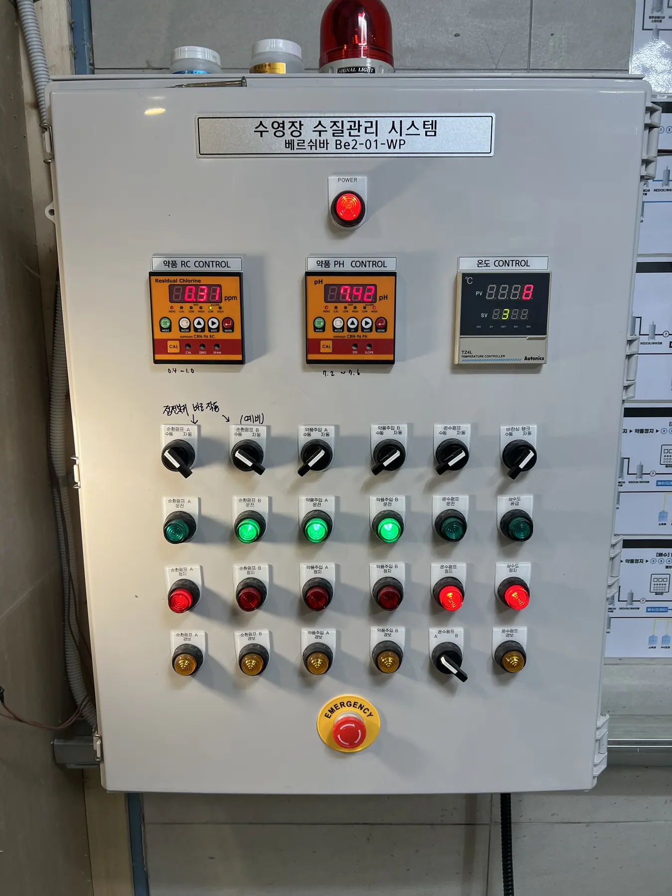
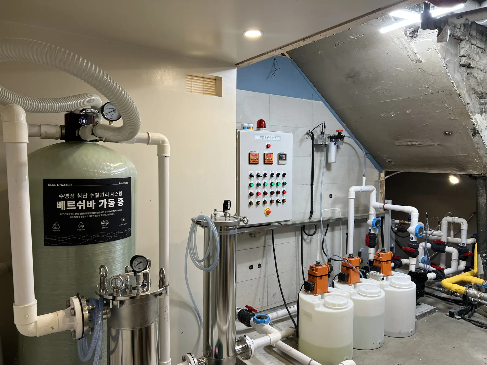
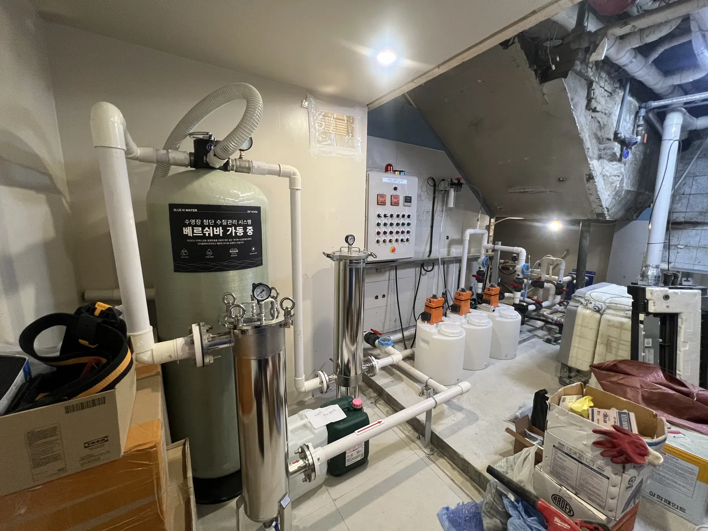
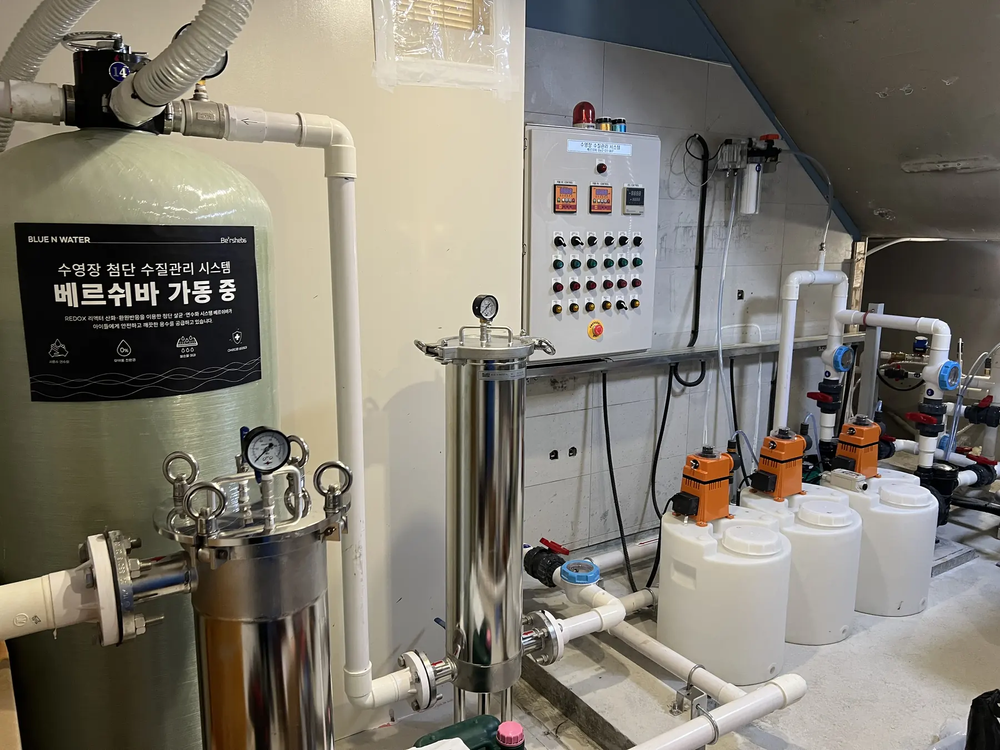

Crystal Clear Pool
흑석동 키즈풀 수영장
어린이 전용 수영장의 고투명 수질관리를 위한 Crystal Clear Water Standard 지향 사례
흑석동 키즈풀 현장의 수질관리 레퍼런스입니다. 투명도·탁도 관리 측면에서 크리스탈 클리어 기준을 만족하는 수준의 물 선명도를 목표로 관리합니다.

흑석동 키즈풀 수영장어린이 전용 수영장의 고투명 수질관리를 위한 Crystal Clear Water Standard 지향 사례
Project Overview
적용 포인트
- 키즈풀 수질관리 레퍼런스
- 크리스탈 클리어 수준의 수중 시야 확보 지향
- 탁도·순환·여과 안정화 운영 기준 검토
BLUE N WATER
Field reference for usable water infrastructure.
흑석동 키즈풀 현장의 수질관리 레퍼런스입니다. 투명도·탁도 관리 측면에서 크리스탈 클리어 기준을 만족하는 수준의 물 선명도를 목표로 관리합니다.
Crystal Clear 기준 지향
수영장 물은 바닥 배수구와 수중 시야가 명확히 보일 정도의 선명도를 유지해야 하며, 탁도 관리 관점에서는 0.5 NTU 이하 수준을 권장하는 자료들이 있습니다. 흑석동·양주시 키즈풀 레퍼런스는 이 같은 선명도·탁도 관리 기준을 만족하는 방향의 수질관리 사례로 정리합니다.
수영장 물은 바닥 배수구와 수중 시야가 명확히 보일 정도의 선명도를 유지해야 하며, 탁도 관리 관점에서는 0.5 NTU 이하 수준을 권장하는 자료들이 있습니다. 흑석동·양주시 키즈풀 레퍼런스는 이 같은 선명도·탁도 관리 기준을 만족하는 방향의 수질관리 사례로 정리합니다.
Field Gallery
흑석동 키즈풀 수영장 현장 이미지
프로젝트 폴더 내 제공 이미지를 웹 최적화하여 가능한 한 모두 반영했습니다.





